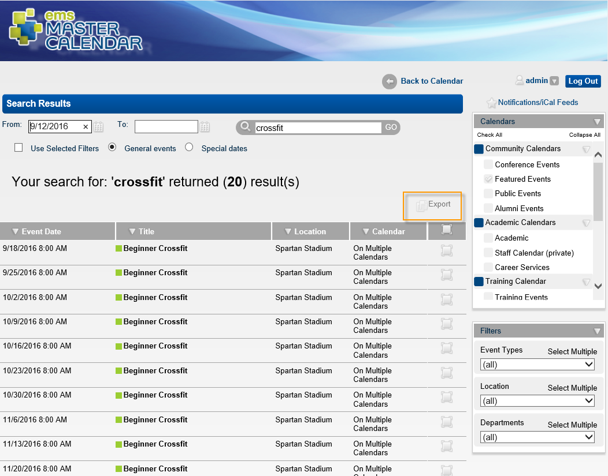

Once you have searched for an event or special date, you can export the search results to an external file. The default name that Master Calendar assigns to a data file that is exported from the Search page is Export.<format>. For example, for a comma-delimited file, the default file name is Export.csv. You can change the filename and specify where to save the file.
